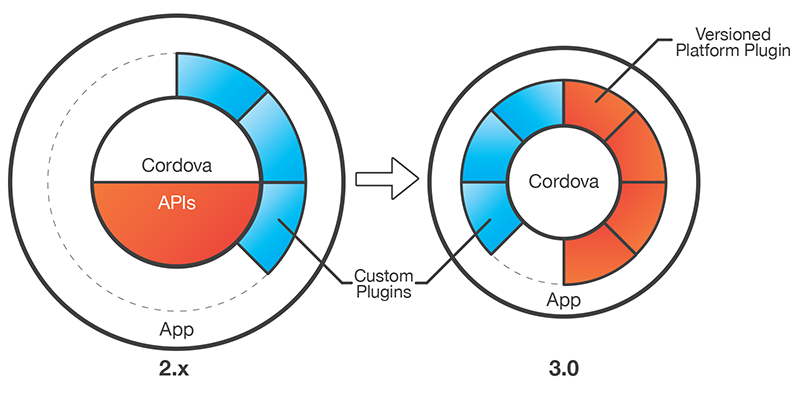

Moving Forward With Phonegap/Cordova Plugins
Created by Josh Bavari / @jbavari
Why am I talking to you?
- You've chosen to build a mobile app with Phonegap/Cordova
- You want to reuse the code base on multiple platforms
- You need to use some native code for specific devices
- You need a quick start to developing native plugins
- You want to see whats hardships are involved with plugins
Not trying to convince you of hybrid
My assumption is you've already chosen to have a hybrid application & youre wanting to know/understand how Cordova / Phonegap interacts with native plugins.
Want to know why to choose Phonegap/Cordova?
Go see Hybrid vs Native: Choosing a Mobile Strategy by Jeff French @ 3:20
What I am talking to you about
- What Cordova & Phonegap is
- State of Phonegap/Cordova & Plugins
- Anatomy of Plugins
- Development lifecycle of Plugins
- Publishing Plugins
Cordova = Phonegap
- Cordova is the tech that bridges Javascript to native code
- Cordova is an Apache project (open source project)
- Phonegap is owned by Adobe
- Phonegap is a special fork of Cordova to be able to provide special build services in the cloud
- Phonegap is essentially Cordova
Cordova
- Apache = 100% open source = FREE
- Backed by Google, Adobe, IBM, & now Microsoft
- Widely accepted, community supported
What Phonegap adds

State of Plugins
Before - Cordova 1.x - 2.x
- HTML/JS runs in Native WebView
- WebView passes back javascript to handler
- All core plugins (camera/contacts/etc) were included in source
- Additional plugins copied (Obj-C / Java) files into project
- Plugins generally found on Github
Today - Cordova 3.x
- HTML/JS still run in Native WebView
- Must add any plugins you want to use
- CLI tool used to add plugins (registry or git url)
- Plugin javascript wrapped in module.exports
- Additional plugins src can be copied (Obj-C / Java) into native project
Evolution
Anatomy of plugins
How it works
- Cordova WebView control handles Javascript / Native bridge
- Javascript - cordova.exec handles interaction with WebView
- Native class plugins communicate with Cordova WebView
- Native plugin classes mapped via config.xml file
- Plugins list methods available in plugin.xml file
Cordova CLI & project layout
- cordova plugin add <local path | git | ID>
- Plugins stored in root in `plugins` folder
- In plugins, json files for each platform
Key Players in Plugins
- In iOS - base class of CDVPlugin
- In Android - base class of CordovaPlugin
- In Windows Phone - base class of BaseCommand
How Plugins Pass Data
Configurations
- In root - config.xml specifies application config
- Each platform as config.xml - specifies native plugin mapping
Plugins each have Plugin.xml
Lets take a look at The Device plugin's Plugin.xml file. During this talk, we will be going over the Device plugin
One Javascript to rule them all
Device.prototype.getInfo = function(successCallback, errorCallback) {
argscheck.checkArgs('fF', 'Device.getInfo', arguments);
exec(successCallback, errorCallback, "Device", "getDeviceInfo", []);
};
//The plugin result will tell us whether its successful or not, in which either success calback
//or error callback will be called.
iOS
// This command will set up a result to pass back through the CordovaWebView
CDVPluginResult* pluginResult = [CDVPluginResult resultWithStatus:CDVCommandStatus_OK messageAsDictionary:deviceProperties];
//Communicates to Webview the result
[self.commandDelegate sendPluginResult:pluginResult callbackId:command.callbackId];
Android
public boolean execute(String action, JSONArray args, CallbackContext callbackContext) throws JSONException {
if (action.equals("getDeviceInfo")) {
JSONObject r = new JSONObject();
r.put("uuid", Device.uuid);
r.put("version", this.getOSVersion());
r.put("platform", this.getPlatform());
r.put("cordova", Device.cordovaVersion);
r.put("model", this.getModel());
callbackContext.success(r);
}
else {
return false;
}
return true;
}
Windows Phone
public void getDeviceInfo(string notused)
{
string res = String.Format("\"name\":\"{0}\",\"cordova\":\"{1}\",\"platform\":\"{2}\",\"uuid\":\"{3}\",\"version\":\"{4}\",\"model\":\"{5}\"",
this.name,
this.cordova,
this.platform,
this.uuid,
this.version,
this.model);
res = "{" + res + "}";
//Debug.WriteLine("Result::" + res);
DispatchCommandResult(new PluginResult(PluginResult.Status.OK, res));
}
iOS
// This command will set up a result to pass back through the CordovaWebView
CDVPluginResult* pluginResult = [CDVPluginResult resultWithStatus:CDVCommandStatus_OK messageAsDictionary:deviceProperties];
//Communicates to Webview the result
[self.commandDelegate sendPluginResult:pluginResult callbackId:command.callbackId];
Debugging Strategies
Debugging iOS
- Logging in XCode
- Using Safari - web inspector
Debugging Android
- In Android 4.4+, Chrome DevTools
- LogCat - filter Cordova
- Pre Android 4.4, check out weinre
Using Plugman
//create base plugin
plugman create --name Popups --plugin_id com.bavari.josh --plugin_version 1.0
//search for existing camera
plugman search camera
//create user to push to registry
plugman adduser
//publish plugin to official cordova registry
plugman publish Popups
A note about Phonegap Build plugsin
- Plugins listed on Phonegap plugins page
- List platforms/plugins in config.xml file
Places to find plugins
- Using plugman search
- Cordova Registry
- Plugreg
- Phonegap Plugins
- Searching Github